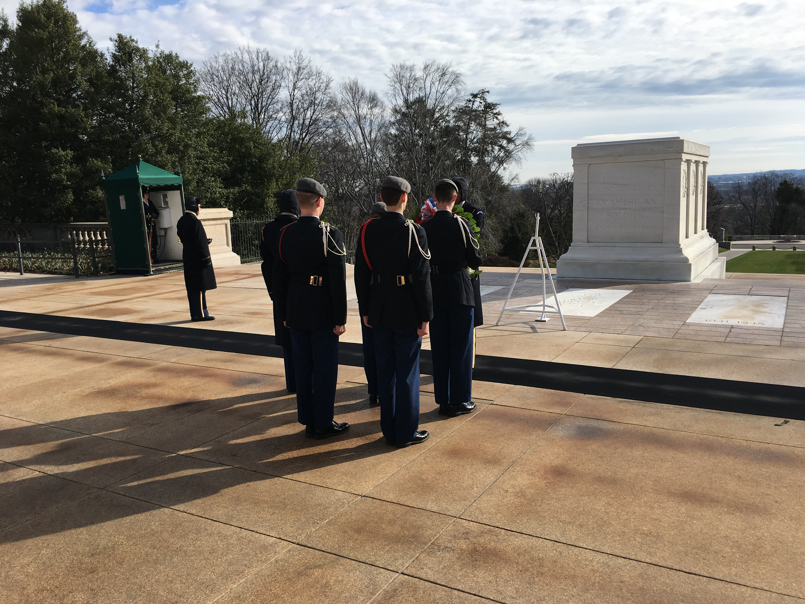

The mission of JROTC is to motivate young people to be better citizens. Students are the focus of Army JROTC's mission. In fact, they are the whole point of Army JROTC-it is devoted to their growth, both as a student and as a person. This program is a cooperative effort on the part of the Army and J.L. Mann Academey to give them an opportunity for total development and improve themself in many ways. JROTC teaches self -discipline, confidence, and pride in a job well done, and it offers them challenges and opportunities to:
LTC (Ret) James Davis - jvdavis@greenville.k12.sc.us
CSM (Ret) Chester Hoxit- choxit@greenville.k12.sc.us
MSG (Ret) Kenneth Worley - kworley@greenville.k12.sc.us
Patriot Battalion cadets at the Capital Building
The Tomb of the Unknown
Stay up to date with the latest events that are happening in Patriot Battalion!
Want to see past news letters? Click here!